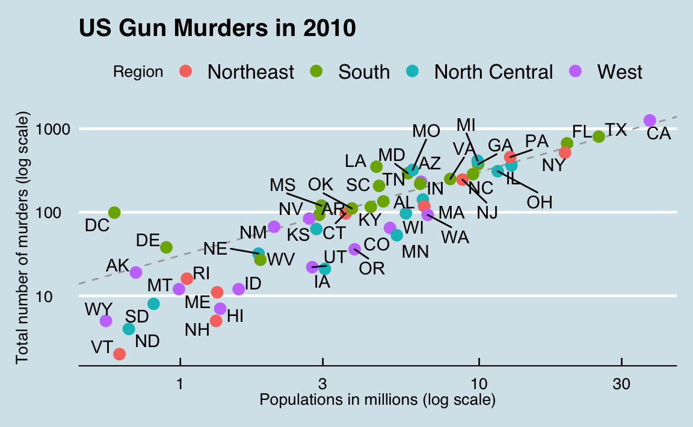
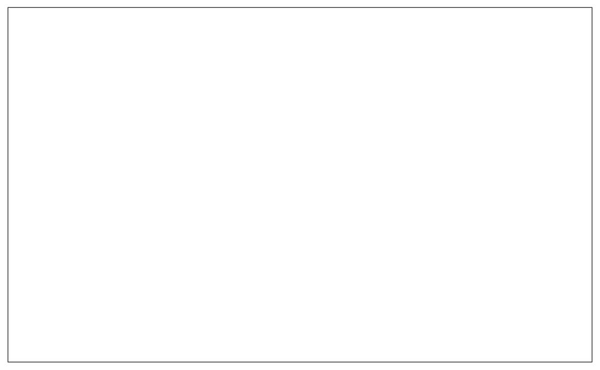
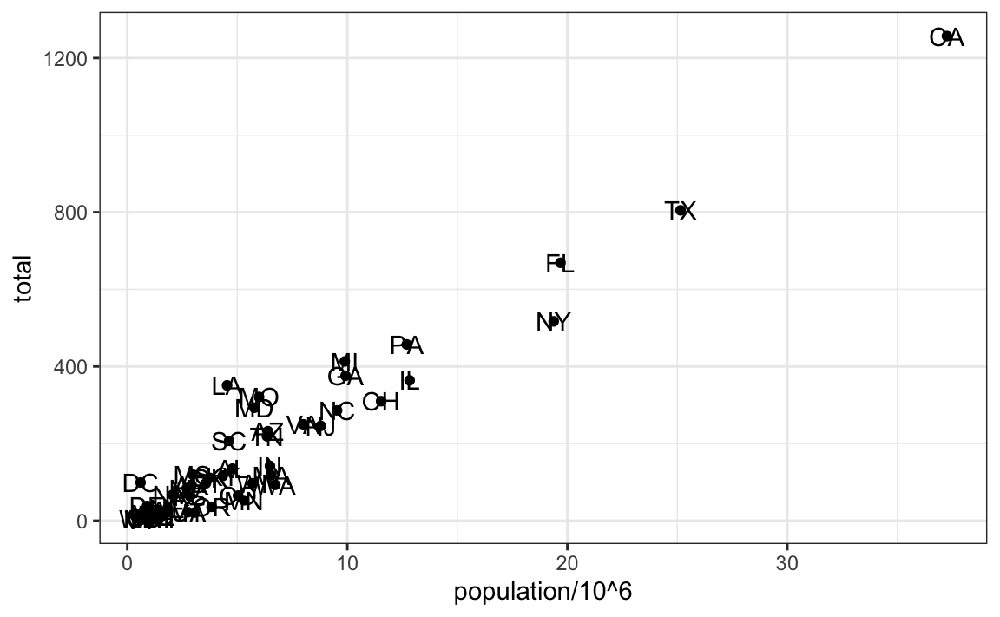
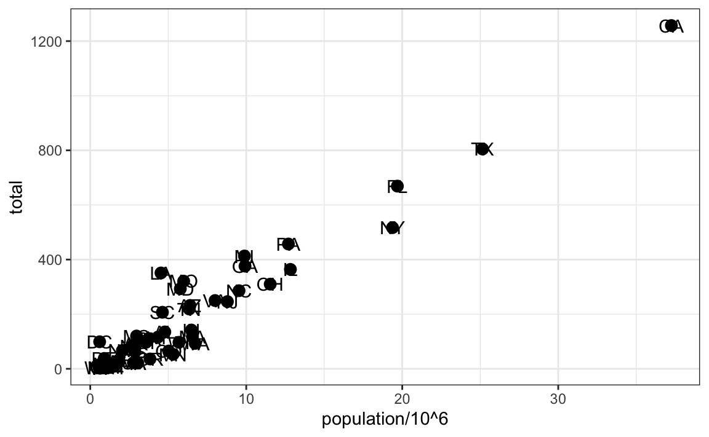
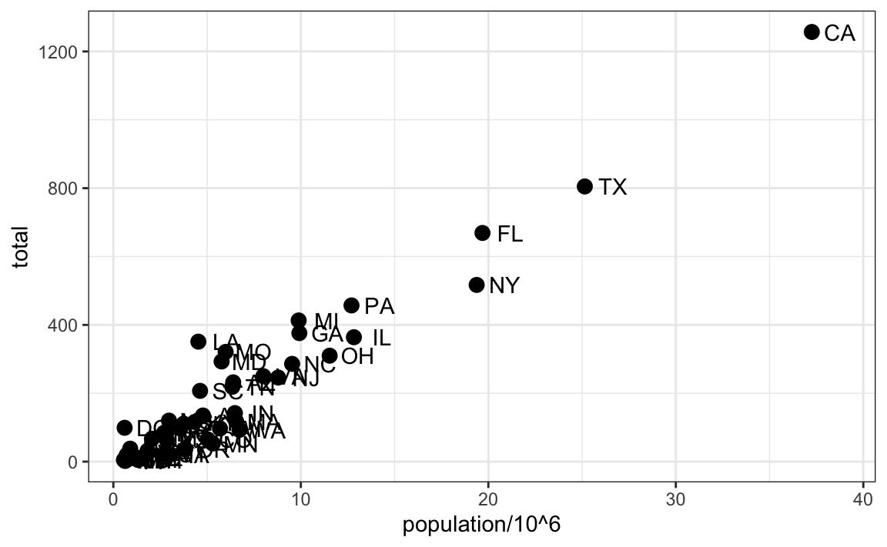
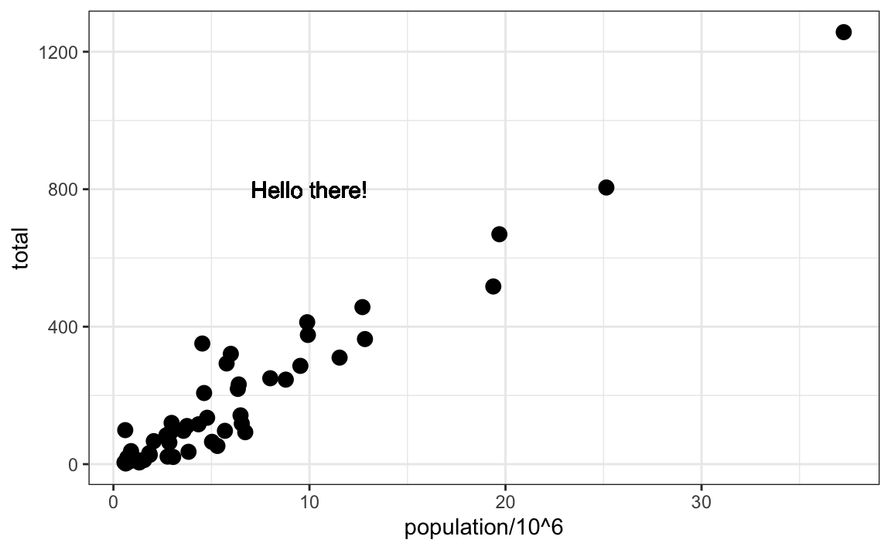
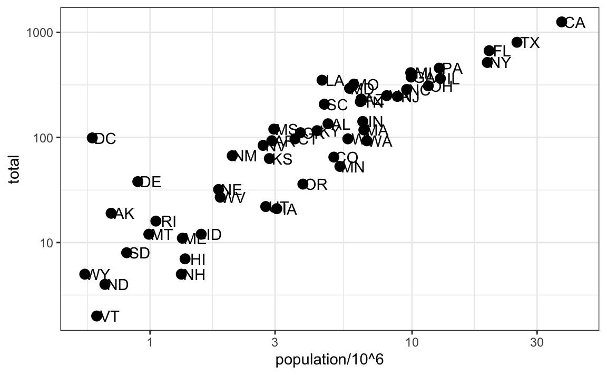
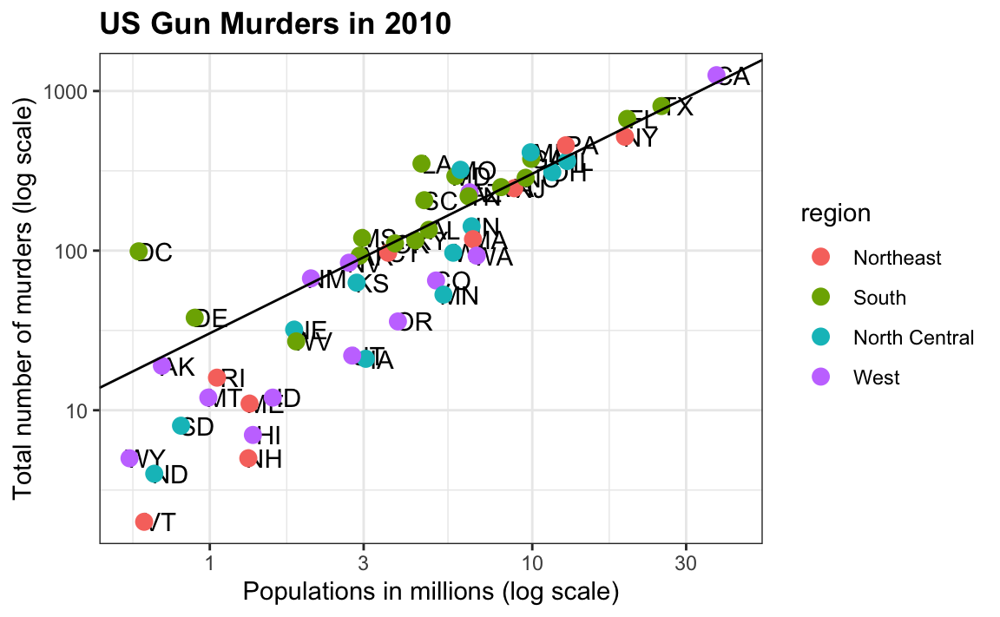
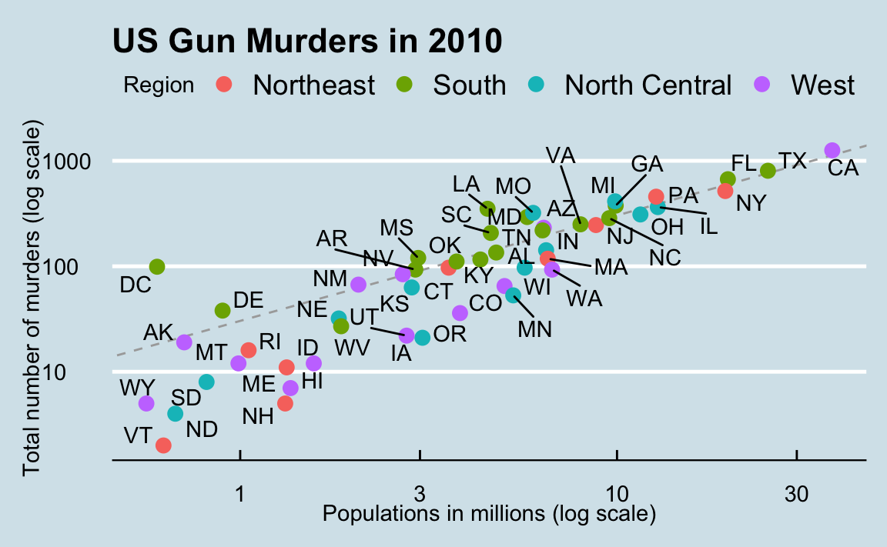

Capítulo 7 ggplot2
La visualización de datos exploratorios es quizás la mayor ventaja de R. Uno puede pasar rápidamente de la idea a los datos al gráfico con un equilibrio único de flexibilidad y facilidad. Por ejemplo, Excel puede ser más fácil que R para algunos gráficos, pero no es tan flexible. D3.js puede ser más flexible y poderoso que R, pero se tarda mucho más en generar una gráfico.
A lo largo del libro, crearemos gráficos usando el paquete ggplot225.
Hay muchas opciones para graficar disponibles en R. De hecho, las capacidades para graficar que vienen con una instalación básica de R ya son bastante poderosas. También hay otros paquetes para crear gráficos como grid y lattice. En este libro, escojimos usar ggplot2 porque divide los gráficos en componentes de una manera que le permite a los principiantes crear gráficos relativamente complejos y estéticamente agradables utilizando una sintaxis intuitiva y relativamente fácil de recordar.
Una razón por la cual ggplot2 es generalmente más intuitiva para los principiantes es porque usa una gramática de gráficos26, el gg de ggplot2. Esto es análogo a la forma en que aprender gramática puede ayudar a un estudiante construir cientos de oraciones diferentes al aprender solo una pequeña cantidad de verbos, sustantivos y adjetivos, en vez de memorizar cada oración específica. Del mismo modo, al aprender una pequeña cantidad de los componentes básicos de ggplot2 y de su gramática, podrán crear cientos de gráficos diferentes.
Otra razón por la cual ggplot2 es fácil para los principiantes es que su comportamiento por defecto se ha elegido cuidadosamente para satisfacer la gran mayoría de los casos y, además, es visualmente agradable. Como resultado, es posible crear gráficos informativos y elegantes con un código relativamente sencillo y legible.
Una limitación de ggplot2 es que está diseñado para trabajar exclusivamente con tablas de datos en formato tidy (donde las filas son observaciones y las columnas son variables). Sin embargo, un porcentaje sustancial de sets de datos con los que los principiantes trabajan están en este formato o pueden convertirse a tal. Una ventaja de este enfoque es que, con tal que nuestros datos estén tidy, ggplot2 simplifica el código de graficar y aprendizaje de gramática para una variedad de gráficos.
Para usar ggplot2, tendrán que aprender varias funciones y argumentos. Estos son difíciles de memorizar, por lo que les recomendamos que tengan a mano la hoja de referencia de ggplot2. Pueden obtener una copia aquí: https://www.rstudio.com/wp-content/uploads/2015/03/ggplot2-cheatsheet.pdf o simplemente buscar “ggplot2 cheat sheet” en el internet.
7.1 Los componentes de un gráfico
Construiremos un gráfico que resume el set de datos de asesinatos con armas en Estados Unidos que se vea así:

Podemos ver claramente cuánto varían los estados según el tamaño de la población y el número total de asesinatos. No es sorprendente que también se observe una relación clara entre los totales de asesinatos y el tamaño de la población. Un estado que cae en la línea discontinua gris tiene la misma tasa de asesinatos que el promedio de EE. UU.. Las cuatro regiones geográficas se denotan con color, que señala cómo la mayoría de los estados del sur tienen tasas de asesinatos por encima del promedio.
Esta visualización de datos nos muestra prácticamente toda la información de la tabla de datos. El código necesario para hacer el gráfico es relativamente sencillo. Aprenderemos a crearlo parte por parte.
El primer paso para aprender ggplot2 es poder separar un gráfico en componentes. Empezaremos analizando el gráfico anterior e introduciendo algo de la terminología ggplot2. Los tres componentes principales a tener en cuenta son:
- Data: Se está resumiendo el set de datos de asesinatos con armas de Estados Unidos. Nos referimos a esto como el componente data.
- Geometría: El gráfico de arriba es un diagrama de dispersión. Esto se denomina el componente de geometría. Otras posibles geometrías son diagrama de barras, histograma, densidades suaves (smooth densities en inglés), gráfico Q-Q y diagrama de caja.
- Mapeo estético: El gráfico usa varias señales visuales para representar la información proveída por el set de datos. Las dos señales más importantes en este gráfico son las posiciones de los puntos en el eje-x y el eje-y, que representan el tamaño de la población y el número total de asesinatos, respectivamente. Cada punto representa una observación diferente, y mapeamos los datos de estas observaciones y las señales visuales a las escalas x e y. El color es otra señal visual que asignamos a la región. Nos referimos a esto como el componente de mapeo estético. La forma en que definimos el mapeo depende de qué geometría estamos usando.
También observamos que:
- Los puntos están etiquetados con las abreviaturas de los estados.
- El rango del eje-x y el eje-y parece estar definido por el rango de los datos. Ambos están en escalas logarítmicas.
- Hay etiquetas, un título, una leyenda y utilizamos el estilo de la revista The Economist.
Ahora construiremos el gráfico pedazo por pedazo. Comenzemos cargando el set de datos:
7.2 objetos ggplot
El primer paso para crear un gráfico ggplot2 es definir un objeto ggplot. Hacemos esto con la función ggplot, que inicializa el gráfico. Si leemos la página de ayuda para esta función, vemos que el primer argumento se usa para especificar qué datos están asociados con este objeto:
También podemos pipe los datos como primer argumento. Entonces, esta línea de código es equivalente a la anterior:

Crea un gráfico, en este caso una pizarra en blanco ya que no se ha definido la geometría. La única opción de estilo que vemos es un fondo gris.
Lo que sucedió es que el objeto fue creado y, debido a que no fue asignado, fue evaluado automáticamente. Pero podemos asignar nuestro gráfico a un objeto, por ejemplo así:
Para representar el gráfico asociado con este objeto, simplemente imprimimos el objeto p. Cada una de las siguientes dos líneas de código produce el mismo gráfico que vemos arriba:
7.3 Geometrías
En ggplot2 creamos gráficos agregando capas (layers en inglés). Las capas pueden definir geometrías, calcular estadísticas de resumen, definir qué escalas (scales en inglés), o incluso cambiar estilos. Para agregar capas, usamos el símbolo +. En general, una línea de código se verá así:
DATOS%>%
ggplot()+ CAPA 1 + CAPA 2 + … + CAPA N
Por lo general, la primera capa agregada define la geometría. Queremos hacer un diagrama de dispersión. ¿Qué geometría utilizamos?
Echando un vistazo rápido a la hoja de referencia, vemos que la función utilizada para crear gráficos con esta geometría es geom_point.


(Imagen cortesía de RStudio27. Licencia CC-BY-4.028.)
Los nombres de las funciones de geometría siguen el patrón: geom_X donde X es el nombre de la geometría. Algunos ejemplos incluyen geom_point, geom_bar y geom_histogram.
Para que geom_point funcione bien, necesitamos proveer datos y una correspondencia. Ya hemos conectado el objeto p con la tabla de datos murders, y si agregamos la capa geom_point, esta por defecto usa estos datos. Para saber qué correspondencias se esperan, lean la sección Aesthetics de la página de ayuda de geom_point:
> Aesthetics
>
> geom_point understands the following aesthetics (required aesthetics are in bold):
>
> x
>
> y
>
> alpha
>
> coloury, como se esperaba, vemos que se requieren al menos dos argumentos x y y.
7.4 Mapeos estéticos
Los mapeos estéticos describen cómo las propiedades de los datos se conectan con las características del gráfico, como la distancia a lo largo de un eje, el tamaño o el color. La función aes conecta los datos con lo que vemos en el gráfico mediante la definición de asignaciones estéticas y será una de las funciones que más utilizarán al graficar. El resultado de la función aes a menudo se utiliza como argumento de una función de geometría. Este ejemplo produce un diagrama de dispersión de asesinatos totales versus población en millones:
Podemos quitar el x = y y = si quisiéramos ya que estos son el primer y el segundo argumento esperado, como se ve en la página de ayuda.
En lugar de definir nuestro gráfico desde cero, también podemos agregar una capa al objeto p que se definió anteriormente como p <- ggplot(data = murders):

La escala y las etiquetas se definen por defecto al agregar esta capa. Al igual que las funciones de dplyr, aes también usa los nombres de variables del componente objeto: podemos usar population y total sin tener que llamarlos como murders$population and murders$total. El comportamiento de reconocer las variables del componente de datos es específico a aes. Con la mayoría de las funciones, si intentan acceder a los valores de population o total fuera de aes, recibirán un error.
7.5 Capas
Una segunda capa en el gráfico que queremos hacer implica agregar una etiqueta a cada punto para identificar el estado. Las funciones geom_label y geom_text nos permiten agregar texto al gráfico con y sin un rectángulo detrás del texto, respectivamente.
Debido a que cada punto (cada estado en este caso) tiene una etiqueta, necesitamos un mapeo estético para hacer la conexión entre los puntos y las etiquetas. Al leer la página de ayuda, aprendemos que proporcionamos el mapeo entre el punto y la etiqueta a través del argumento label de aes. Entonces el código se ve así:

Hemos agregado con éxito una segunda capa al gráfico.
Como ejemplo del comportamiento único de aes mencionado anteriormente, observen que esta llamada:
está bien, mientras que esta llamada:
les dará un error ya que abb no se encuentra porque está fuera de la función aes. La capa geom_text no sabe dónde encontrar abb ya que es un nombre de columna y no una variable global.
7.5.1 Cómo probar varios argumentos
Cada función de geometría tiene muchos argumentos además de aes y data. Estos tienden a ser específicos a la función. Por ejemplo, en el gráfico que queremos hacer, los puntos son más grandes que el tamaño predeterminado. En la página de ayuda vemos que size es una estética y podemos cambiarla así:
p + geom_point(aes(population/10^6, total), size = 3) +
geom_text(aes(population/10^6, total, label = abb))
size no es un mapeo: mientras los mapeos usan datos de observaciones específicas y necesitan estar dentro de aes(), las operaciones que queremos que afecten a todos los puntos de la misma manera no necesitan ser incluidas dentro aes.
Ahora, debido a que los puntos son más grandes, es difícil ver las etiquetas. Si leemos la página de ayuda para geom_text, vemos que el argumento nudge_x mueve el texto ligeramente hacia la derecha o hacia la izquierda:
p + geom_point(aes(population/10^6, total), size = 3) +
geom_text(aes(population/10^6, total, label = abb), nudge_x = 1.5)
Esto es preferible puesto que facilita la lectura del texto. En la sección 7.11 aprenderemos una mejor manera de asegurarnos de que podemos ver los puntos y las etiquetas.
7.6 Mapeos estéticos globales versus locales
En la línea anterior de código, definimos el mapeo aes(population/10^6, total) dos veces, una vez en cada geometría. Podemos evitar esto usando un mapeo estético global cuando definimos la pizarra en blanco que nos da el objeto ggplot. Recuerden que la función ggplot contiene un argumento que nos permite definir mapeos estéticos:
Si definimos un mapeo en ggplot, todas las geometrías que se agregan como capas se asignarán por defecto a este mapeo. Redefinimos p:
y entonces podemos simplemente escribir el siguiente código para producir el gráfico anterior:
Mantenemos los argumentos size y nudge_x en geom_point y geom_text, respectivamente, porque solo queremos aumentar el tamaño de los puntos y ajustar la posición (nudge en inglés) de las etiquetas. Si ponemos esos argumentos en aes, entonces se aplicarán a ambos gráficos. También tengan en cuenta que la función geom_point no necesita un argumento label y por lo tanto ignora esa estética.
Si es necesario, podemos anular el mapeo global definiendo un nuevo mapeo dentro de cada capa. Estas definiciones locales reemplazan a las globales. Aquí hay un ejemplo:

Claramente, la segunda llamada a geom_text no usa population y total.
7.7 Escalas
Primero, las escalas que queremos están en escala logarítmica. Este no es el valor predeterminado, por lo que este cambio debe agregarse a través de una capa escalas (scales en inglés). Una mirada rápida a la hoja de referencia revela que la función scale_x_continuous nos permite controlar el comportamiento de las escalas. La usamos así:
p + geom_point(size = 3) +
geom_text(nudge_x = 0.05) +
scale_x_continuous(trans = "log10") +
scale_y_continuous(trans = "log10")
Debido a que ahora estamos en la escala logarítmica, el ajuste a la posición, debe hacerse más pequeño.
Esta transformación particular es tan común que ggplot2 ofrece dos funciones especializadas scale_x_log10 y scale_y_log10, que podemos usar para reescribir el código de esta manera:
7.8 Etiquetas y títulos
Del mismo modo, la hoja de referencia revela que para cambiar las etiquetas y agregar un título, utilizamos las siguientes funciones:
p + geom_point(size = 3) +
geom_text(nudge_x = 0.05) +
scale_x_log10() +
scale_y_log10() +
xlab("Populations in millions (log scale)") +
ylab("Total number of murders (log scale)") +
ggtitle("US Gun Murders in 2010")
¡Casi terminamos! Lo único que nos falta es agregar color, leyenda y cambios opcionales al estilo.
7.9 Categorías como colores
Podemos cambiar el color de los puntos usando el argumento col en la función geom_point. Para facilitar la demostración de nuevas características, redefiniremos p para ser todo excepto la capa de puntos:
p <- murders %>% ggplot(aes(population/10^6, total, label = abb)) +
geom_text(nudge_x = 0.05) +
scale_x_log10() +
scale_y_log10() +
xlab("Populations in millions (log scale)") +
ylab("Total number of murders (log scale)") +
ggtitle("US Gun Murders in 2010")y luego probaremos lo que sucede cuando agregamos diferentes llamadas a geom_point. Por ejemplo, podemos hacer que todos los puntos sean azules agregando el argumento color:

Sin embargo, no queremos esto. Queremos asignar color según la región geográfica. Un buen comportamiento por defecto de ggplot2 es que si asignamos una variable categórica al color, automáticamente asigna un color diferente a cada categoría, además de una leyenda.
Dado que la elección del color está determinada por una característica de cada observación, este es un mapeo estético. Para asignar cada punto a un color, necesitamos usar aes. Usamos el siguiente código:

Los mapeos x y y se heredan de esos ya definidos en p, así que no los redefinimos. También movemos aes al primer argumento, ya que ahí es donde se esperan los mapeos en esta llamada.
Aquí vemos otro comportamiento útil por defecto: ggplot2 automáticamente agrega una leyenda que asigna el color a la región. Para evitar agregar esta leyenda, establecemos el argumento geom_point como show.legend = FALSE.
7.10 Anotación, formas y ajustes
A menudo queremos agregar formas o anotaciones a las figuras que no se derivan directamente del mapeo estético; algunos ejemplos incluyen etiquetas, cuadros, áreas sombreadas y líneas.
Aquí queremos agregar una línea que represente la tasa promedio de asesinatos en todo el país. Una vez que determinamos la tasa por millón a ser \(r\), esta línea se define por la fórmula: \(y = r x\), con \(y\) y \(x\) nuestros ejes: asesinatos totales y población en millones, respectivamente. En la escala logarítmica, esta línea se convierte en: \(\log(y) = \log(r) + \log(x)\). Entonces, en nuestro gráfico, es una línea con pendiente 1 e intercepto \(\log(r)\). Para calcular este valor, utilizamos nuestras habilidades de dplyr:
Para agregar una línea, usamos la función geom_abline. ggplot2 utiliza ab en el nombre para recordarnos que estamos suministrando el intercepto (a) y pendiente (b). La línea predeterminada tiene pendiente 1 e intercepto 0, por lo que solo tenemos que definir el intercepto:

Aquí geom_abline no utiliza ninguna información del objeto de datos.
Podemos cambiar el tipo de línea y el color de las líneas usando argumentos. Además, la dibujamos primero para que no tape nuestros puntos.
p <- p + geom_abline(intercept = log10(r), lty = 2, color = "darkgrey") +
geom_point(aes(col=region), size = 3)Tengan en cuenta que hemos redefinido p y usamos este nuevo p a continuación y en la siguiente sección.
Los gráficos por defecto creados por ggplot2 ya son muy útiles. Sin embargo, con frecuencia necesitamos hacer pequeños ajustes al comportamiento predeterminado. Aunque no siempre es obvio cómo hacer esto aun con la hoja de referencia, ggplot2 es muy flexible.
Por ejemplo, podemos hacer cambios a la leyenda a través de la función scale_color_discrete. En nuestro gráfico original, la palabra region está en mayúscula y podemos cambiarla así:
7.11 Paquetes complementarios
El poder de ggplot2 se incrementa aún más debido a la disponibilidad de paquetes adicionales. Los cambios restantes necesarios para darle los toques finales a nuestro gráfico requieren los paquetes ggthemes y ggrepel.
El estilo de un gráfico ggplot2 se puede cambiar usando las funciones theme. Se incluyen varios temas (themes en inglés) como parte del paquete ggplot2. De hecho, para la mayoría de los gráficos de este libro, utilizamos una función del paquete dslabs que automáticamente establece un tema predeterminado:
El paquete ggthemes agrega muchos otros temas. Entre esos están el tema theme_economist que fue el que escogimos . Después de instalar el paquete, pueden cambiar el estilo agregando una capa como esta:
Pueden ver cómo se ven algunos de los otros temas simplemente cambiando la función. Por ejemplo, pueden probar el tema theme_fivethirtyeight() en vez del anterior.
La diferencia final tiene que ver con la posición de las etiquetas. En nuestro gráfico, algunas de las etiquetas se superponen. El paquete de complementos ggrepel incluye una geometría que agrega etiquetas a la vez que garantiza que no se superpongan entre sí. Simplemente cambiamos geom_text a geom_text_repel.
7.12 Cómo combinarlo todo
Ahora que hemos terminado las pruebas, podemos escribir un código que produzca nuestro gráfico deseado partiendo de cero.
library(ggthemes)
library(ggrepel)
r <- murders %>%
summarize(rate = sum(total)/ sum(population) * 10^6) %>%
pull(rate)
murders %>% ggplot(aes(population/10^6, total, label = abb)) +
geom_abline(intercept = log10(r), lty = 2, color = "darkgrey") +
geom_point(aes(col=region), size = 3) +
geom_text_repel() +
scale_x_log10() +
scale_y_log10() +
xlab("Populations in millions (log scale)") +
ylab("Total number of murders (log scale)") +
ggtitle("US Gun Murders in 2010") +
scale_color_discrete(name = "Region") +
theme_economist()
7.13 Gráficos rápidos con qplot
Hemos aprendido el poderoso acercamiento para generar visualizaciones con ggplot. Sin embargo, hay casos en que sólo necesitamos un gráfico rápido de, por ejemplo, un histograma de los valores en un vector, un diagrama de dispersión de los valores en dos vectores o un diagrama de caja usando vectores categóricos y numéricos. Demostramos cómo generar estos gráficos con hist, plot y boxplot. Sin embargo, si queremos ser consistentes con el estilo ggplot, podemos usar la función qplot.
Si tenemos valores en dos vectores, digamos:
y queremos hacer un diagrama de dispersión con ggplot, tendríamos que escribir algo como:
Esto parece demasiado código para una gráfico tan sencillo. La función qplot sacrifica la flexibilidad proporcionada por el enfoque de ggplot, pero nos permite rápidamente generar un gráfico.
Aprenderemos más sobre qplot en la sección 8.16
7.14 Cuadrículas de gráficos
A menudo tenemos que poner gráficos uno al lado del de otro. El paquete gridExtra nos permite hacer eso:

7.15 Ejercicios
Comience cargando los paquetes dplyr y ggplot2, así como los datos murders y heights.
1. Con ggplot2 los gráficos se pueden guardar como objetos. Por ejemplo, podemos asociar un set de datos con un objeto de gráfico así:
Como data es el primer argumento, no necesitamos explicarlo:
y también podemos usar el pipe:
¿Cuál es la clase del objeto p?
2. Recuerde que para imprimir un objeto puede usar el comando print o simplemente escribir el objeto. Imprima el objeto p definido en el ejercicio uno y describa lo que ve.
- No pasa nada.
- Una gráfico de pizarra en blanco.
- Un diagrama de dispersión.
- Un histograma.
3. Usando el pipe %>%, cree un objeto p pero esta vez asociado con el set de datos heights en lugar del set de datos murders.
4. ¿Cuál es la clase del objeto p que acaba de crear?
5. Ahora vamos a agregar una capa y las mapeos estéticos correspondientes. Para los datos de asesinatos, graficamos asesinatos totales versus tamaños de población. Explore el set de datos murders para recordar cuáles son los nombres de estas dos variables y escoja la respuesta correcta. Sugerencia: Mire ?murders.
stateyabbtotal_murdersypopulation_sizetotalypopulationmurdersysize
6. Para crear el diagrama de dispersión, agregamos una capa con geom_point. Los mapeos estéticos requieren que definamos las variables del eje-x y del eje-y, respectivamente. Entonces el código se ve así:
excepto que tenemos que definir las dos variables x y y. Rellene esto con los nombres correctos de las variables.
7. Recuerde que si no usamos nombres de argumentos, podemos obtener el mismo gráfico asegurándonos de ingresar los nombres de las variables en el orden correcto de esta manera:
Vuelva a hacer el gráfico pero ahora con total en el eje-x y población en el eje-y.
8. Si en lugar de puntos queremos agregar texto, podemos usar las geometrías geom_text() o geom_label(). El siguiente código:
nos dará el mensaje de error: Error: geom_label requires the following missing aesthetics: label
¿Por qué ocurre esto?
- Necesitamos mapear un carácter a cada punto a través del argumento de etiqueta en
aes. - Necesitamos dejar que
geom_labelsepa qué carácter usar en el gráfico. - La geometría
geom_labelno requiere valores del eje-x y del eje-y. geom_labelno es un comando de ggplot2.
9. Vuelva a escribir el código anterior para utilizar la abreviatura como la etiqueta a través de aes.
10. Cambie el color de las etiquetas a azul. ¿Cómo se hace?
- Agregando una columna llamada
blueamurders. - Debido a que cada etiqueta necesita un color diferente, mapeamos los colores a través de
aes. - Utilizando el argumento
colorenggplot. - Como queremos que todos los colores sean azules, no necesitamos asignar colores, solo usar el argumento de color en
geom_label.
11. Reescriba el código anterior para que las etiquetas sean azules.
12. Ahora supongamos que queremos usar color para representar las diferentes regiones. En este caso, ¿cuál de los siguientes es el más apropiado?
- Agregar una columna llamada
coloramurderscon el color que queremos usar. - Como cada etiqueta necesita un color diferente, mapear los colores a través del argumento de color de
aes. - Utilizar el argumento
colorenggplot. - Como queremos que todos los colores sean azules, no necesitamos asignar colores, solo usar el argumento de color en
geom_label.
13. Reescriba el código anterior para que el color de las etiquetas esté determinado por la región del estado.
14. Ahora vamos a cambiar el eje-x a una escala logarítmica para tener en cuenta el hecho de que la distribución de la población es asimétrica. Comencemos definiendo un objeto p guardando el gráfico que hemos hecho hasta ahora:
Para cambiar el eje-y a una escala logarítmica, aprendimos sobre la función scale_x_log10(). Agregue esta capa al objeto p para cambiar la escala y crear el gráfico.
15. Repita el ejercicio anterior pero ahora cambie ambos ejes para que estén en la escala logarítmica.
16. Ahora edite el código anterior para agregar el título “Gun murder data” al argumento. Sugerencia: use la función ggtitle.